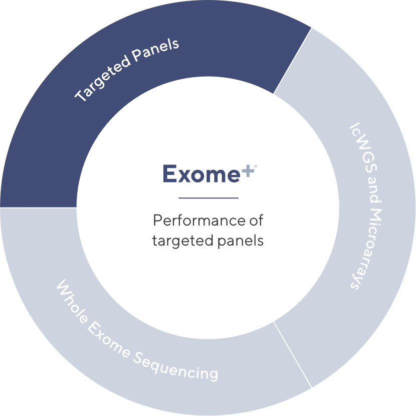
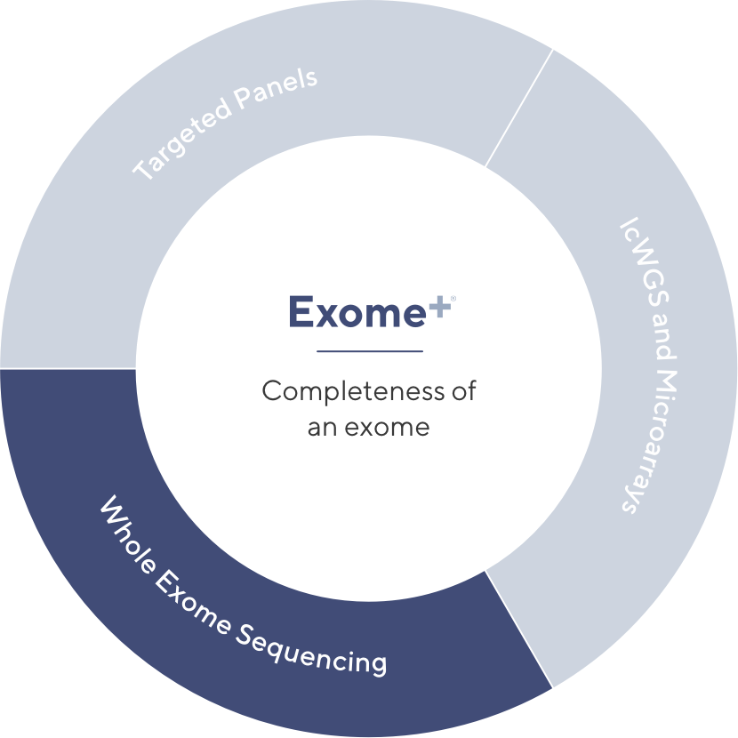
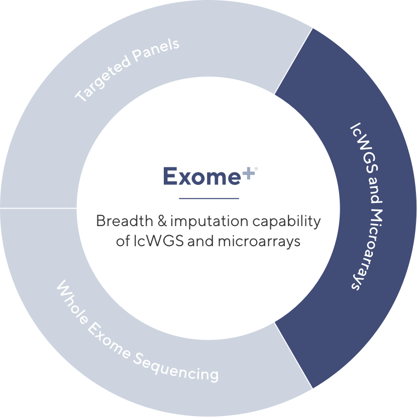
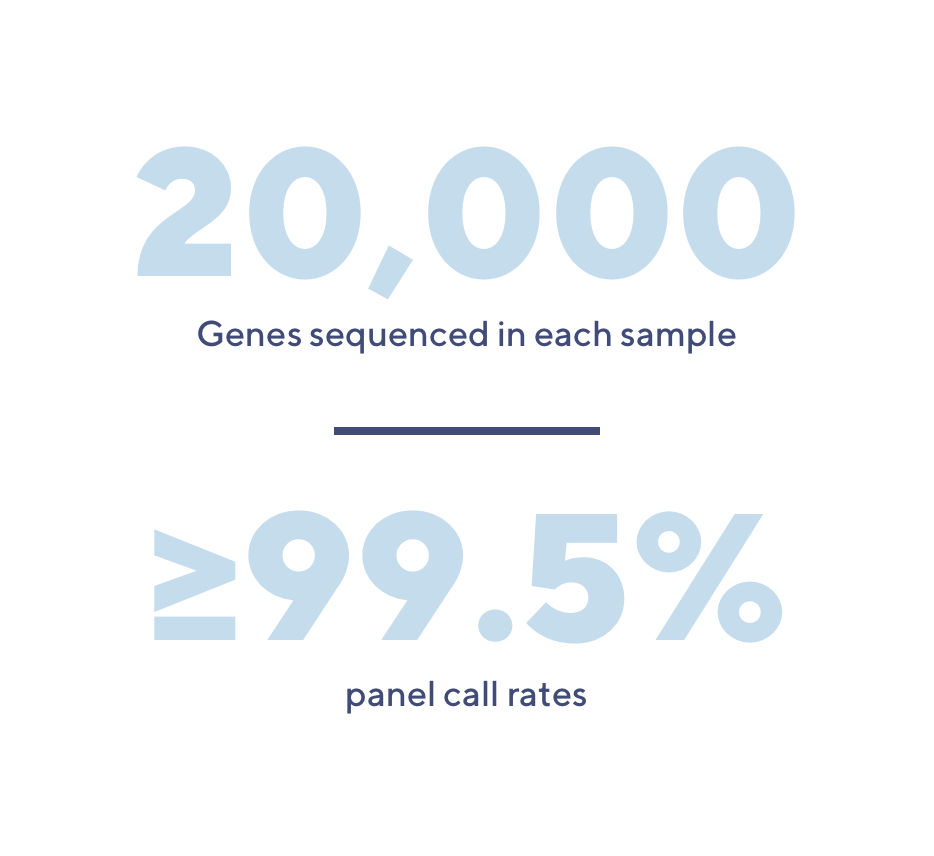
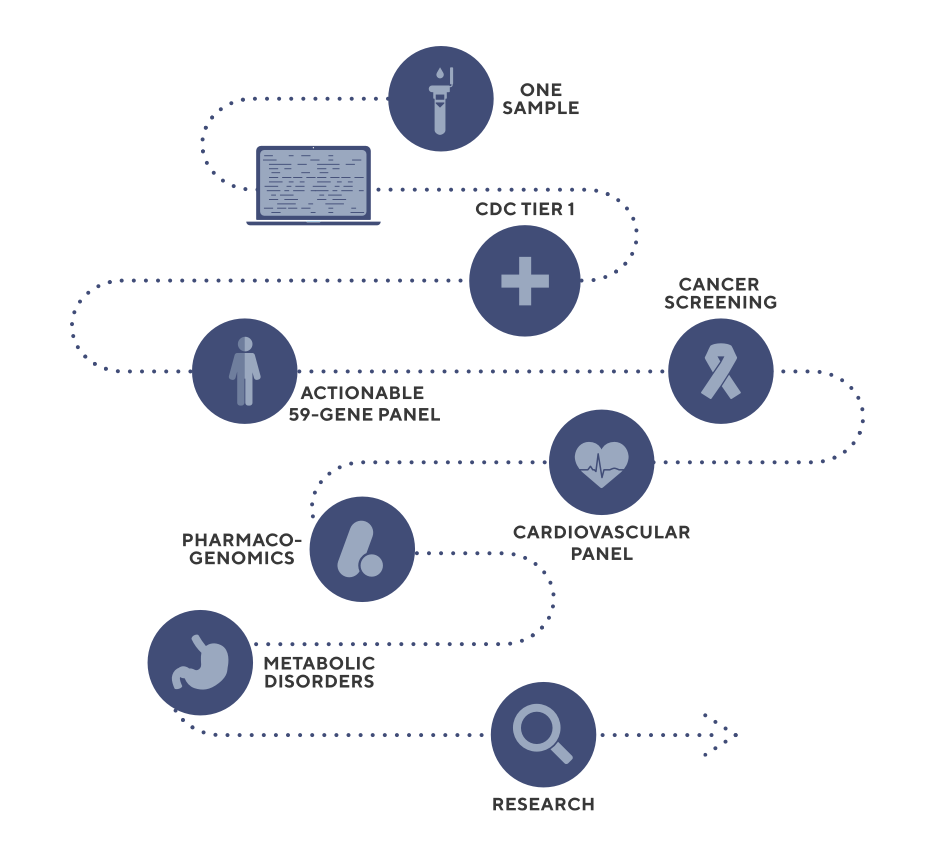
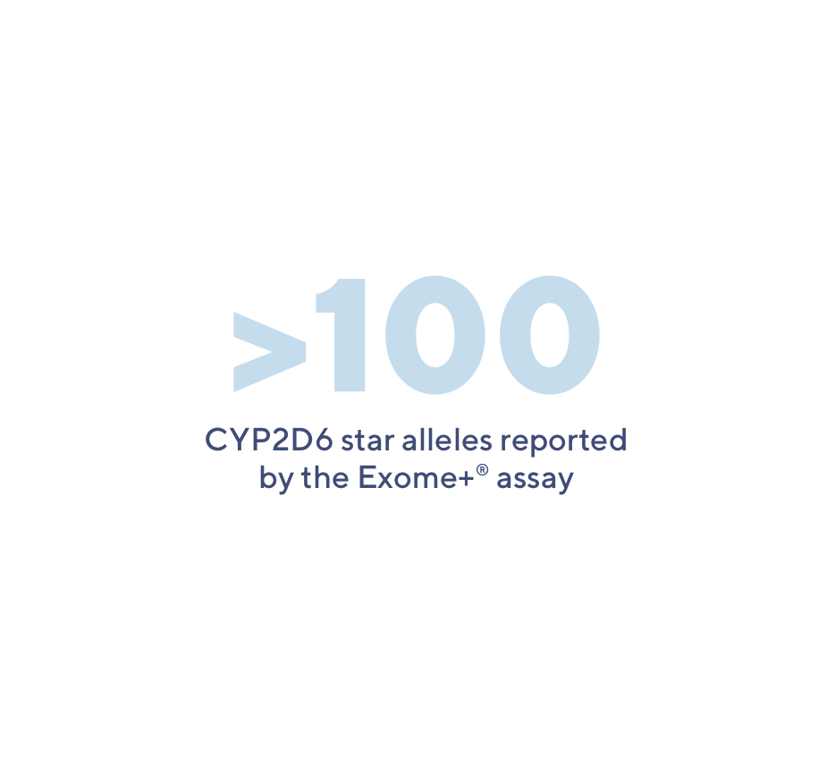

Bringing the benefits of multiple assays into one
Helix’s Exome+® assay has been carefully optimized to provide the benefits of lcWGS, whole exome sequencing, microarrays, and targeted panels — all in one assay.
Targeted Panels
Panels are often used in clinical settings because they’re low cost and provide high quality coverage of specific, pre-defined genomic regions of interest. While useful in certain settings, such assays are limited by their narrow focus.
With ≥ 99.5% call rate across ~600 genes relevant to many disease states, the Exome+ assay enables you to run multiple panel-grade analyses with a single sample.
Whole Exome Sequencing
Alternative text
lcWGS and Microarrays
Alternative text
A future proofed assay
Helix’s Exome+ assay has been carefully optimized to provide the benefits of targeted panels and the completeness of whole exome sequencing.
Flexible test design

The Exome+ assay provides the flexibility needed to build a comprehensive panel that can be expanded over time. With ~20,000 genes sequenced in each sample, every gene becomes a candidate for inclusion. And, while we have ensured the highest call rates across those genes that are most likely to belong to a panel, the Exome+ assay delivers high call rates for all genes beyond this core set.
Sequence once, query often

Alternative text
Comprehensive PGx

Alternative text